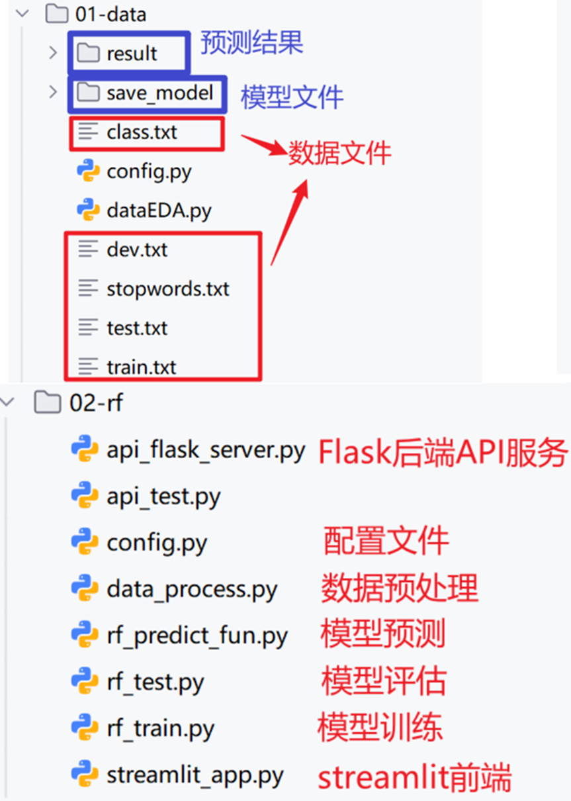
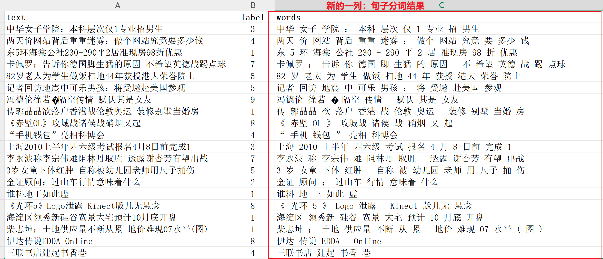
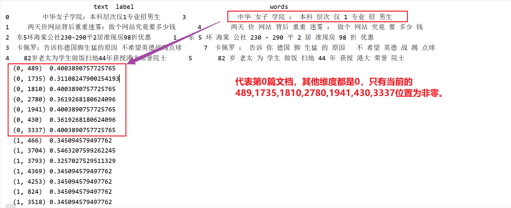
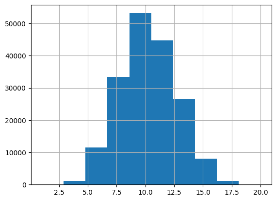
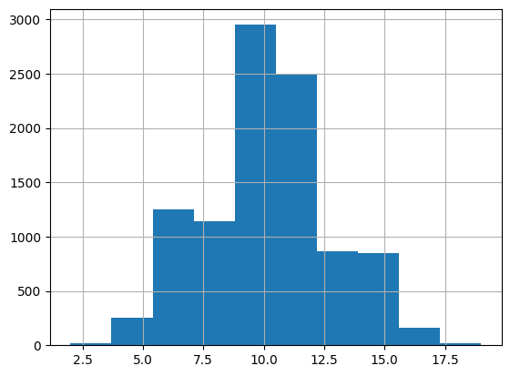
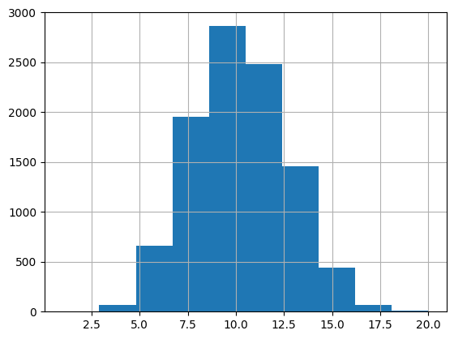
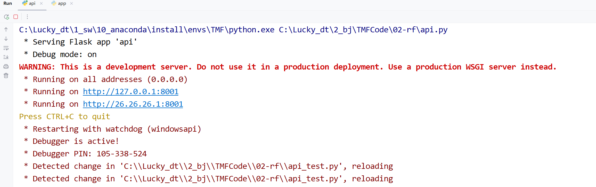
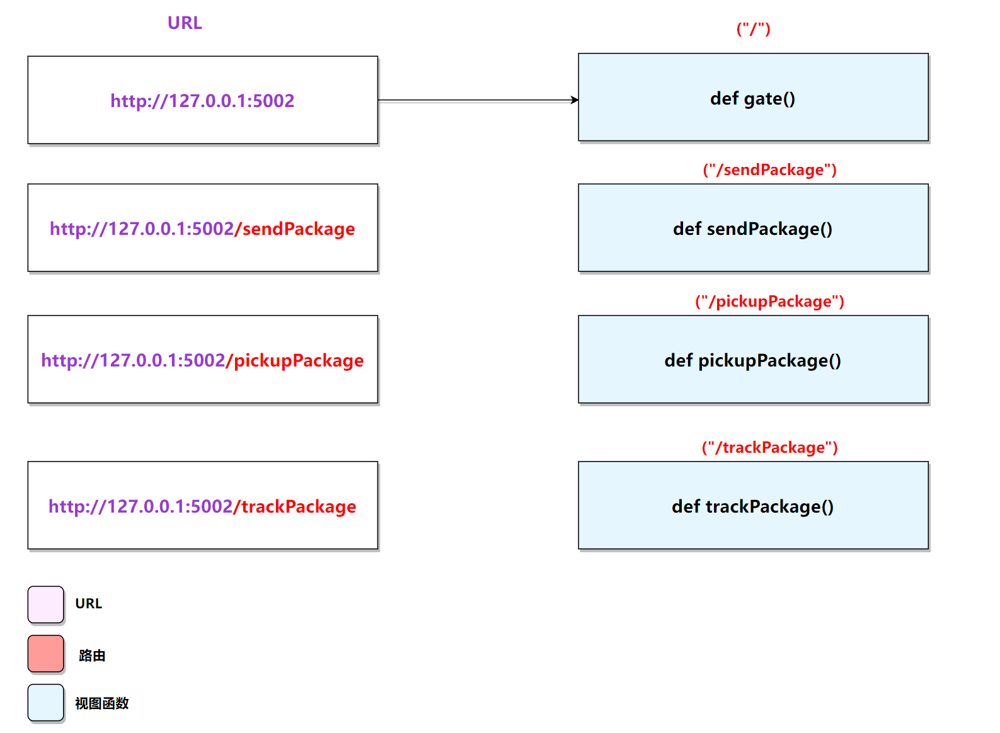
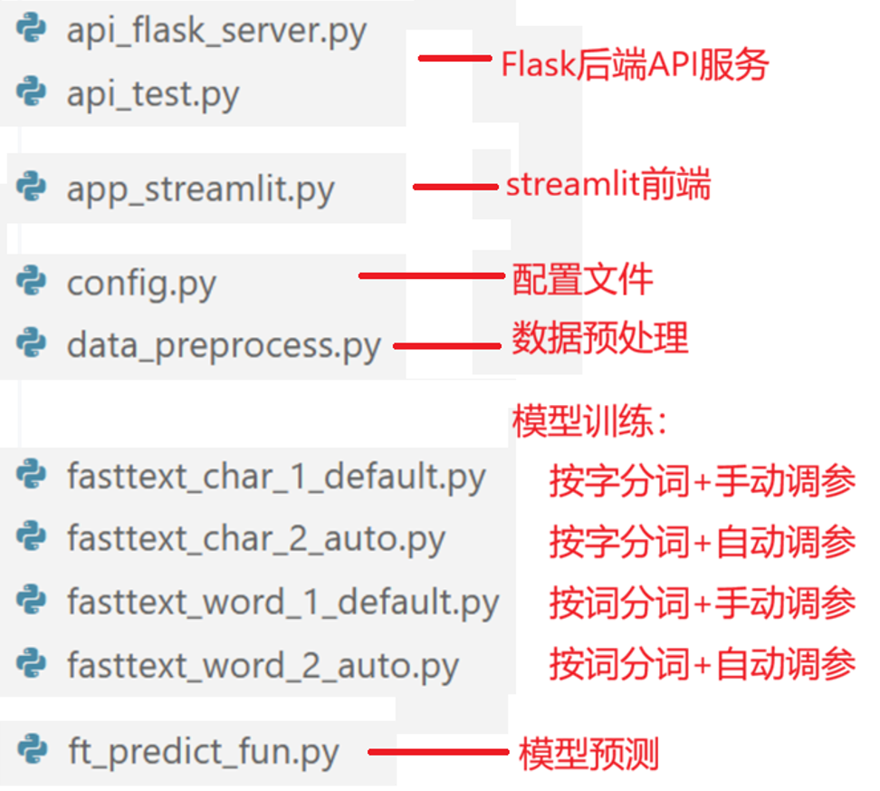

1 随机森林模型
学习目标
- 掌握利用随机森林实现基线模型.
- 能够完成模型部署
- 理解建模、评估、上线整个流程
为什么要做基线模型？：
基线模型(Baseline Model)是AI建模任务的重要起点，主要核心目标是：
① 快速验证任务可行性：基线模型通常简单高效，能够快速验证数据和任务的可行性，为后续优化提供方向。
② 提供性能参考：基线模型的性能为后续复杂模型（如深度学习模型）提供对比基准，衡量改进效果。
③ 降低开发成本：基线模型实现简单，能在资源有限的情况下快速构建一个可用的解决方案。
④ 发现问题：通过基线模型的训练和评估，可以发现潜问题，例如数据质量问题。
1.1 代码结构图

基于随机森林分类建模思路：
①对数据train.txt等文件的文本列进行 分词， 得到words列

②采用TF-IDF将words列，转换为数值特征

③利用随机森林算法进行建模、评估与保存 ④模型预测 ⑤模型部署，提供api接口 ⑥前端预测实现
1.2 代码实现
1 config配置文件
""" 配置文件，统一管理全局配置信息，包括数据路径、类别信息等。方便项目的管理和后期维护。 """ import os # 文件操作模块 from pathlib import Path # 路径操作模块 # 不显示警告信息 import warnings warnings.filterwarnings("ignore") # 1.定义配置类，集中管理全局配置信息，比如数据路径、类别信息 class Config(): # 1.定义__init__方法，初始化配置项 def __init__(self): # 1.初始化根路径 # self.root_path = os.path.join(Path(__file__).parent.parent, "01-data") self.root_path = r"project/01-data" # 2.初始化数据文件路径 self.train_path = os.path.join(self.root_path, "train.txt") self.dev_path = os.path.join(self.root_path, "dev.txt") self.test_path = os.path.join(self.root_path, "test.txt") # 停用词文件路径 self.stopwords_path = os.path.join(self.root_path, "stopwords.txt") # 3.初始化类别文件路径 self.class_path = os.path.join(self.root_path, "class.txt") # 4.初始化 处理后的数据文件路径 self.process_train_path = os.path.join(self.root_path, "process_train.csv") self.process_dev_path = os.path.join(self.root_path, "process_dev.csv") self.process_test_path = os.path.join(self.root_path, "process_test.csv") # 5.模型保存路径 os.makedirs(os.path.join(self.root_path, "save_model"), exist_ok=True) # pkl格式，用于保存sklearn机器学习模型 self.rf_model_path = os.path.join(self.root_path, "save_model", "rf_model.pkl") self.tfidf_model_path = os.path.join(self.root_path, "save_model", "tfidf_model.pkl") # 6.模型预测结果路径，txt os.makedirs(os.path.join(self.root_path, "result"), exist_ok=True) self.model_predict_result = os.path.join(self.root_path, "result", "model_predict_result.txt") # 7.API配置 self.api_host = "127.0.0.1" # 本地地址 self.api_port = 5000 # 端口号 # 2.测试 if __name__ == "__main__": # 1.创建配置对象 config = Config() # 2.打印配置信息，验证是否正确加载 print("根路径:", config.root_path) print("训练数据路径:", config.train_path) print("验证数据路径:", config.dev_path) print("测试数据路径:", config.test_path) print("停用词文件路径:", config.stopwords_path) print("类别文件路径:", config.class_path) print(f"处理后的训练数据路径: {config.process_train_path}") print(f"服务器地址: api_host: {config.api_host} | " f"端口号:{config.api_port}")
根路径: project/01-data
训练数据路径: project/01-data\train.txt
验证数据路径: project/01-data\dev.txt
测试数据路径: project/01-data\test.txt
停用词文件路径: project/01-data\stopwords.txt
类别文件路径: project/01-data\class.txt
处理后的训练数据路径: project/01-data\process_train.csv
服务器地址: api_host: 127.0.0.1 | 端口号:5000
2 data_process数据处理
""" 数据预处理, 进行jieba分词, 并保存为CSV文件 """ # 导包 import pandas as pd # 处理表格数据 import jieba # 中文分词 # from config import Config # 配置文件 import matplotlib.pyplot as plt # 数据可视化 import seaborn as sns # 1.创建配置对象 config = Config() # 2.定义函数，处理数据，进行jieba分词，并保存为CSV文件 def process_data(data_path, save_path): """ 数据处理函数，对原始数据集text进行jieba分词并保存为CSV文件 :param data_path: 原始数据文件路径，txt格式，每行格式：label \t text :param save_path: 处理后数据文件路径，CSV格式，包含两列：label和text :return: 无 """ # 1.读取原始文件，返回pandas数据框 data = pd.read_csv(data_path, sep="\t", names=["text","label"]) print(data.head()) # 2.进行jieba分词 def cut_words(sentence): return " ".join(jieba.lcut(sentence)[:20]) data['words'] = data["text"].apply(cut_words) # 3.进行jieba分词，获取序列长度seq_len def get_seq_len(sentence): return len(jieba.lcut(sentence)[:20]) data['seq_len'] = data["text"].apply(get_seq_len) print(data.head()) # 4.可视化序列长度分布 data['seq_len'].hist() plt.show() print(data['seq_len'].describe()) # 5.保存处理后的数据为CSV文件 data.to_csv(save_path, index=False) print(f"处理后的数据保存在：{save_path}") # 3.处理数据 # 训练集 process_data(data_path=config.train_path, save_path=config.process_train_path) # 验证集 process_data(data_path=config.dev_path, save_path=config.process_dev_path) # 测试集 process_data(data_path=config.test_path, save_path=config.process_test_path)
Building prefix dict from the default dictionary ...
text label
0 中华女子学院：本科层次仅1专业招男生 3
1 两天价网站背后重重迷雾：做个网站究竟要多少钱 4
2 东5环海棠公社230-290平2居准现房98折优惠 1
3 卡佩罗：告诉你德国脚生猛的原因 不希望英德战踢点球 7
4 82岁老太为学生做饭扫地44年获授港大荣誉院士 5
Dumping model to file cache <本地用户目录>\AppData\Local\Temp\jieba.cache
Loading model cost 0.483 seconds.
Prefix dict has been built successfully.
text label words \
0 中华女子学院：本科层次仅1专业招男生 3 中华 女子 学院 ： 本科 层次 仅 1 专业 招 男生
1 两天价网站背后重重迷雾：做个网站究竟要多少钱 4 两天 价 网站 背后 重重 迷雾 ： 做个 网站 究竟 要 多少 钱
2 东5环海棠公社230-290平2居准现房98折优惠 1 东 5 环 海棠 公社 230 - 290 平 2 居 准现房 98 折 优惠
3 卡佩罗：告诉你德国脚生猛的原因 不希望英德战踢点球 7 卡佩罗 ： 告诉 你 德国 脚 生猛 的 原因 不 希望 英德 战 踢 点球
4 82岁老太为学生做饭扫地44年获授港大荣誉院士 5 82 岁 老太 为 学生 做饭 扫地 44 年 获授 港大 荣誉 院士
seq_len
0 11
1 13
2 15
3 16
4 13

count 180000.000000
mean 10.246356
std 2.575008
min 1.000000
25% 8.000000
50% 10.000000
75% 12.000000
max 20.000000
Name: seq_len, dtype: float64
处理后的数据保存在：project/01-data\process_train.csv
text label
0 体验2D巅峰 倚天屠龙记十大创新概览 8
1 60年铁树开花形状似玉米芯(组图) 5
2 同步A股首秀：港股缩量回调 2
3 中青宝sg现场抓拍 兔子舞热辣表演 8
4 锌价难续去年辉煌 0
text label words seq_len
0 体验2D巅峰 倚天屠龙记十大创新概览 8 体验 2D 巅峰 倚天 屠龙记 十大 创新 概览 9
1 60年铁树开花形状似玉米芯(组图) 5 60 年 铁树开花 形状 似 玉米芯 ( 组图 ) 9
2 同步A股首秀：港股缩量回调 2 同步 A股 首秀 ： 港股 缩量 回调 7
3 中青宝sg现场抓拍 兔子舞热辣表演 8 中青宝 sg 现场 抓拍 兔子 舞 热辣 表演 9
4 锌价难续去年辉煌 0 锌 价难续 去年 辉煌 4

count 10000.000000
mean 10.178400
std 2.553747
min 2.000000
25% 8.000000
50% 10.000000
75% 12.000000
max 19.000000
Name: seq_len, dtype: float64
处理后的数据保存在：project/01-data\process_dev.csv
text label
0 词汇阅读是关键 08年考研暑期英语复习全指南 3
1 中国人民公安大学2012年硕士研究生目录及书目 3
2 日本地震：金吉列关注在日学子系列报道 3
3 名师辅导：2012考研英语虚拟语气三种用法 3
4 自考经验谈：自考生毕业论文选题技巧 3
text label words seq_len
0 词汇阅读是关键 08年考研暑期英语复习全指南 3 词汇 阅读 是 关键 08 年 考研 暑期 英语 复习 全 指南 13
1 中国人民公安大学2012年硕士研究生目录及书目 3 中国 人民 公安大学 2012 年 硕士 研究生 目录 及 书目 10
2 日本地震：金吉列关注在日学子系列报道 3 日本 地震 ： 金吉列 关注 在 日 学子 系列报道 9
3 名师辅导：2012考研英语虚拟语气三种用法 3 名师 辅导 ： 2012 考研 英语 虚拟语气 三种 用法 9
4 自考经验谈：自考生毕业论文选题技巧 3 自考 经验谈 ： 自 考生 毕业论文 选题 技巧 8

count 10000.000000
mean 10.217400
std 2.594997
min 1.000000
25% 8.000000
50% 10.000000
75% 12.000000
max 20.000000
Name: seq_len, dtype: float64
处理后的数据保存在：project/01-data\process_test.csv
3 rf_train模型训练
""" 演示 训练随机森林模型和TF-IDF向量化器 随机森林训练工作流： 1.加载训练集 2.使用TF-IDF向量化器提取文本特征 3.训练随机森林模型 4.评估模型性能 5.保存模型和向量化器 """ # 导包 import pandas as pd import pickle from sklearn.feature_extraction.text import TfidfVectorizer from sklearn.model_selection import train_test_split # 模型评估指标：准确率、精确率、召回率、F1-score、分类评估报告、混淆矩阵 from sklearn.metrics import accuracy_score, precision_score, recall_score, f1_score, classification_report, \ confusion_matrix # from config import Config # 集成学习模型：随机森林、AdaBoost、GBDT from sklearn.ensemble import RandomForestClassifier, AdaBoostClassifier, GradientBoostingClassifier from tqdm import tqdm # 0.pandas的基础设置 pd.set_option('display.expand_frame_repr', False) # 避免宽表格换行 pd.set_option('display.max_columns', None) # 确保所有列可见 config = Config() # 1.加载训练集 # 读取前20000行 train_data = pd.read_csv(config.process_train_path)[:20000] print(f"训练集大小：{len(train_data)}") # print(train_data.head()) # 提取特征列words words = train_data['words'] print(f"words: {words.head()}") # 提取标签列label labels = train_data['label'] print(f"labels: {labels.head()}") # 2.使用TF-IDF向量化器提取文本特征 # 读取停用词文件 with open(config.stopwords_path, 'r', encoding='utf-8') as f: # 遍历行，去掉空行和空格，内存占用小 stop_words = [word.strip() for word in f if word.strip()] # 一次性读取所有行，内存占用大 # stop_words = f.read().split() print(f"stop_words: {stop_words[:10]}") # 初始化TF-IDF向量化器，指定停用词列表 tfidf = TfidfVectorizer(stop_words=stop_words) # 训练TF-IDF向量化器,并转换文本为TF-IDF特征 features = tfidf.fit_transform(words) print(f"features.shape: {features.shape}") # 查看词表 # print(f"vocabulary_:{len(tfidf.vocabulary_)}\n {tfidf.vocabulary_}") # 3.训练随机森林模型 # 划分训练集和验证集 x_train, x_test, y_train, y_test = train_test_split(features, labels, test_size=0.2, random_state=42) print(f"训练集大小：{x_train.shape}") print(f"测试集大小：{x_test.shape}") # 初始化随机森林分类器 model = RandomForestClassifier() # 训练模型 model.fit(x_train, y_train) # 模型评估 y_pred = model.predict(x_test) # macro: 各个类别指标，平权平均，每个类别权重一样 # micro: 汇总所有TP/FP/FN,直接算指标 # weighted: 各个类别指标，按照样本数加权平均，大类权重更大 print(f"准确率：\n{accuracy_score(y_test, y_pred)}") print(f"精确率(macro)：\n{precision_score(y_test, y_pred, average='macro')}") print(f"召回率(macro)：\n{recall_score(y_test, y_pred, average='macro')}") print(f"F1-score(macro)：\n{f1_score(y_test, y_pred, average='macro')}") print(f"classification_report：\n{classification_report(y_test, y_pred)}") print(f"confusion_matrix：\n{confusion_matrix(y_test, y_pred)}") # 4.保存模型和向量化器 # 保存训练好的模型 with open(config.rf_model_path, 'wb') as f: pickle.dump(model, f) print(f"保存模型为：{config.rf_model_path}") # 保存TF-IDF向量化器 with open(config.tfidf_model_path, 'wb') as f: pickle.dump(tfidf, f) print(f"保存向量化器为：{config.tfidf_model_path}")
训练集大小：20000
words: 0 中华 女子 学院 ： 本科 层次 仅 1 专业 招 男生
1 两天 价 网站 背后 重重 迷雾 ： 做个 网站 究竟 要 多少 钱
2 东 5 环 海棠 公社 230 - 290 平 2 居 准现房 98 折 优惠
3 卡佩罗 ： 告诉 你 德国 脚 生猛 的 原因 不 希望 英德 战 踢 点球
4 82 岁 老太 为 学生 做饭 扫地 44 年 获授 港大 荣誉 院士
Name: words, dtype: object
labels: 0 3
1 4
2 1
3 7
4 5
Name: label, dtype: int64
stop_words: [':', '：', '———', '》），', '）÷（１－', '”，', '）、', '＝（', '→', '℃']
features.shape: (20000, 34930)
训练集大小：(16000, 34930)
测试集大小：(4000, 34930)
准确率：
0.7275
精确率(macro)：
0.7656117855857135
召回率(macro)：
0.7266703099952767
F1-score(macro)：
0.7369534657970548
classification_report：
precision recall f1-score support
0 0.84 0.72 0.78 392
1 0.86 0.80 0.83 408
2 0.69 0.62 0.65 415
3 0.88 0.87 0.87 387
4 0.75 0.60 0.67 378
5 0.76 0.70 0.73 381
6 0.75 0.70 0.72 410
7 0.86 0.71 0.78 396
8 0.83 0.71 0.76 404
9 0.44 0.83 0.57 429
accuracy 0.73 4000
macro avg 0.77 0.73 0.74 4000
weighted avg 0.76 0.73 0.74 4000
confusion_matrix：
[[283 2 50 4 4 6 4 1 1 37]
[ 4 325 12 7 5 4 8 0 8 35]
[ 36 14 258 2 15 4 22 6 3 55]
[ 0 3 2 337 2 5 9 1 3 25]
[ 7 7 28 4 227 14 9 10 24 48]
[ 2 8 4 14 8 266 12 2 3 62]
[ 0 6 10 5 8 21 287 8 4 61]
[ 0 5 2 3 1 6 13 282 3 81]
[ 3 1 7 6 22 5 7 10 287 56]
[ 1 6 2 3 9 20 12 7 11 358]]
保存模型为：project/01-data\save_model\rf_model.pkl
保存向量化器为：project/01-data\save_model\tfidf_model.pkl
注意：tf-idf文本数值化。核心是将文本转化为数值表示。
TF-IDF介绍
TF-IDF（term frequency–inverse document frequency，词频-逆向文件频率）是一种将文本转化为数值向量的向量化方法。它由两部分组成，TF 和 IDF。
- TF, term frequency,词频。一个词在一篇文章里出现的频率（出现的次数除以文章总词数）。
- IDF, inverse document frequency,逆文档频率。IDF 用来衡量一个词在所有文章中的“独特性”。如果一个词只在少数文章中出现，IDF 分数高，说明它很重要；如果一个词几乎每篇文章都有，IDF 分数低，说明它不重要。
#样例数据： D1: 中华 女子 学院 本科 层次 仅 1 专业 招 男生 D2: 两天 价 网站 背后 重重 迷雾 ： 做个 网站 究竟 要 多少 钱 D3: 东 5 环 海棠 公社 230 - 290 平 2 居 准现房 98 折 优惠 D4: 卡佩罗 ： 告诉 你 德国 脚 生猛 的 原因 不 希望 英德 战 踢 点球 D5: 82 岁 老太 为 学生 做饭 扫地 44 年 获 授 港大 荣誉 院士
- step1. 计算TF
$$ \text{TF}(t, d) = \frac{\text{词 } t \text{ 在文档 } d \text{ 中的出现次数}}{\text{文档 } d \text{ 的总词数}} $$
- t:具体的词，如“本科”
- d: 当前文档,如 D1
- TF作用：衡量当前词在当前文档的频率。考虑到文章有长短之分，为了便于不同文章的比较，进行 “词频” 归一化, /文档总词数
-
示例：TF("本科",D1) = 1/10
-
step2. 计算IDF
$$ \text{IDF}(t) = \log\left(\frac{N}{\text{df}(t) + 1}\right) + 1 $$
- N: 总文档数。
- df(t): 包含词 t 的文档数
- 示例：IDF("本科") =log(5/2) +1 ≈ 1.916
如果一个词越常见，IDF逆文档频率就越小。这里分母+1，是为了避免分母为0。
- step3. 计算TF-IDF
$$ \text{TF-IDF}(t, d) = \text{TF}(t, d) \times \text{IDF}(t) $$
结合 TF 和 IDF，计算词 t 在文档 d 的重要性分数。
- step4. 总结
TF-IDF 是一种统计方法 和 文本数值化方法，用以评估一个词对于一个文件集或一个语料库中的其中一份文件的重要程度。词的重要性正相关于它在文档的词频，负相关于 它在语料库中出现的频率。
TF-IDF 的主要思想是：如果某个词在一篇文章中出现的词频 TF 高，并且在其他文章中很少出现，则此词具有很好的类别区分能力。
4 rf_test模型测试
""" 演示 随机森林模型的 模型评估 """ # 导包 import pandas as pd import pickle # from config import Config # 分类模型评估指标 from sklearn.metrics import accuracy_score, precision_score, recall_score, f1_score, classification_report, \ confusion_matrix # 取消警告显示 import warnings warnings.filterwarnings("ignore") # 设置pandas显示 pd.set_option('display.expand_frame_repr', False) # 避免宽表格换行 pd.set_option('display.max_columns', None) # 确保所有列可见 # 1.加载配置文件 config = Config() # 2.加载模型和向量化器 with open(config.rf_model_path, 'rb') as f: model = pickle.load(f) with open(config.tfidf_model_path, 'rb') as f: tfidf = pickle.load(f) # 3.读取dev数据集，分隔符为, dev_data = pd.read_csv(config.process_dev_path, sep=',') words = dev_data['words'] # 4.对dev数据集进行向量化 features = tfidf.transform(words) print(f"features.shape: {features.shape}") # 5.模型预测 y_pred = model.predict(features) # 6.模型评估 y_true = dev_data['label'] # 准确率: 预测正确的样本数 / 总样本数 print(f"准确率：{accuracy_score(y_true, y_pred)}") # 多分类平均方式： # macro: 各个类别指标，平权平均，每个类别权重一样 # weighted: 各个类别指标，按照样本数加权平均，大类权重更大 # micro: 汇总所有TP/FP/FN,直接算指标 # 精确率：TP / (TP + FP) print(f"精确率(macro)：{precision_score(y_true, y_pred, average='macro')}") print(f"精确率(micro)：{precision_score(y_true, y_pred, average='micro')}") print(f"精确率(weighted)：{precision_score(y_true, y_pred, average='weighted')}") # 召回率：TP / (TP + FN) print(f"召回率(macro)：{recall_score(y_true, y_pred, average='macro')}") print(f"召回率(micro)：{recall_score(y_true, y_pred, average='micro')}") print(f"召回率(weighted)：{recall_score(y_true, y_pred, average='weighted')}") # F1-score: 2 * (精确率 * 召回率) / (精确率 + 召回率) print(f"F1-score(macro)：{f1_score(y_true, y_pred, average='macro')}") print(f"F1-score(micro)：{f1_score(y_true, y_pred, average='micro')}") print(f"F1-score(weighted)：{f1_score(y_true, y_pred, average='weighted')}") print(f"classification_report：{classification_report(y_true, y_pred)}") # 7.保存预测结果 dev_data['pred_label'] = y_pred print(f"dev_data: {dev_data.head()}") dev_data.to_csv(config.model_predict_result, sep='\t', index=False)
features.shape: (10000, 34930)
准确率：0.7334
精确率(macro)：0.7600245238122915
精确率(micro)：0.7334
精确率(weighted)：0.7600245238122915
召回率(macro)：0.7333999999999999
召回率(micro)：0.7334
召回率(weighted)：0.7334
F1-score(macro)：0.7400187808047967
F1-score(micro)：0.7334
F1-score(weighted)：0.7400187808047967
classification_report： precision recall f1-score support
0 0.79 0.71 0.75 1000
1 0.84 0.78 0.81 1000
2 0.66 0.67 0.67 1000
3 0.85 0.86 0.86 1000
4 0.75 0.65 0.70 1000
5 0.77 0.71 0.74 1000
6 0.78 0.73 0.75 1000
7 0.89 0.71 0.79 1000
8 0.80 0.73 0.76 1000
9 0.46 0.79 0.58 1000
accuracy 0.73 10000
macro avg 0.76 0.73 0.74 10000
weighted avg 0.76 0.73 0.74 10000
dev_data: text label words seq_len pred_label
0 体验2D巅峰 倚天屠龙记十大创新概览 8 体验 2D 巅峰 倚天 屠龙记 十大 创新 概览 9 8
1 60年铁树开花形状似玉米芯(组图) 5 60 年 铁树开花 形状 似 玉米芯 ( 组图 ) 9 9
2 同步A股首秀：港股缩量回调 2 同步 A股 首秀 ： 港股 缩量 回调 7 2
3 中青宝sg现场抓拍 兔子舞热辣表演 8 中青宝 sg 现场 抓拍 兔子 舞 热辣 表演 9 9
4 锌价难续去年辉煌 0 锌 价难续 去年 辉煌 4 9
5 rf_predict_fun模型预测
""" 演示 随机森林模型的 模型预测 """ # 导包 import jieba # from config import Config import pickle import time # 取消警告显示 import warnings warnings.filterwarnings("ignore") # 1.加载配置文件 config = Config() # 2.加载模型和向量化器 with open(config.rf_model_path, 'rb') as f: model = pickle.load(f) with open(config.tfidf_model_path, 'rb') as f: tfidf = pickle.load(f) # 3.模型预测函数 def predict_fun(data): # 1.jieba分词 words = " ".join(jieba.lcut(data['text']))[:30] # 2.TF-IDF向量化 features = tfidf.transform([words]) # 3.预测 y_pred = model.predict(features)[0] # 4.获取标签索引->标签名称的映射关系 # 类别文件是文本文件，每行一个类别名称，所以用文本方式读取 with open(config.class_path, 'r', encoding='utf-8') as f: # 按行读取，去掉空行，内存占用小 class_list = [line.strip() for line in f if line.strip()] # 一次性读取整个文件，再拆分，内存占用大 # class_list = f.read().split() id2class = {idx: cls for idx, cls in enumerate(class_list)} # 5.获取预测的类别名称 y_pred_class = id2class[y_pred] # 6.给原始数据新增1列 data['pred_class'] = y_pred_class return data # 4.测试 if __name__ == '__main__': data = {"text": "《射雕》群侠战高三：指点考生应考秘籍(图)"} print(predict_fun(data)) # 计算推理延迟 start = time.time() for i in range(100): predict_fun(data) end = time.time() print(f"推理延迟：{(end - start)/100:.5f}s")
{'text': '《射雕》群侠战高三：指点考生应考秘籍(图)', 'pred_class': 'education'}
推理延迟：0.00374s
s1 = '故人西辞富士康, 为学技术到蓝翔! 蓝翔毕业包分配, 尼玛还是富士康' print(list(s1)) print(" ".join(list(s1)))
['故', '人', '西', '辞', '富', '士', '康', ',', ' ', '为', '学', '技', '术', '到', '蓝', '翔', '!', ' ', '蓝', '翔', '毕', '业', '包', '分', '配', ',', ' ', '尼', '玛', '还', '是', '富', '士', '康']
故 人 西 辞 富 士 康 , 为 学 技 术 到 蓝 翔 ! 蓝 翔 毕 业 包 分 配 , 尼 玛 还 是 富 士 康
6 api接口封装
这里使用Flask框架部署后端API服务，实现生产环境部署.
- 随机森林模型的在线服务地址（http://127.0.0.1:8001）
api.py服务启动演示：

flask的demo:
Flask框架是当下受欢迎的python轻量级框架。 Flask的基本模式为在程序里将一个视图函数分配一个URL，每当用户访问这个URL时，系统就会执行给该URL对应的视图函数，获取函数的返回值，其工作过程见图：

将预测函数封装成 api在线服务，需要flask、request工具
requests 是一个简单易用的 HTTP 客户端工具，允许我们通过 Python 代码向服务器发送 HTTP 请求并处理响应。
""" 通过Flask组件，构建 路由 + 预测函数 的应用 """ # 导包 from flask import Flask, request, jsonify # from rf_predict_fun import predict_fun # from config import Config # 1.创建App应用 app = Flask(__name__) config = Config() # 2.创建预测接口(路由 + 预测函数) # HTTP请求方法：GET（获取资源）, POST（提交数据）, PUT（更新资源）, DELETE（删除资源） @app.route('/predict', methods=['POST']) def predict(): # 获取用户请求中的数据 data = request.get_json() print(f"data: {data}, {type(data)}") # 调用预测函数 result = predict_fun(data) # 返回预测结果，jsonify将Python对象转换为JSON格式 return jsonify(result) # 3.启动App应用 if __name__ == '__main__': # 支持局域网访问 app.run(host=config.api_host, port=config.api_port, debug=True)
* Serving Flask app '__main__'
* Debug mode: off
WARNING: This is a development server. Do not use it in a production deployment. Use a production WSGI server instead.
* Running on http://192.168.1.4:5000
Press CTRL+C to quit
7 api_test测试API接口
""" 创建一个Flask应用，并启动应用 """ # 导包 import requests # from config import Config config = Config() # 定义接口地址 url = f"http://{config.api_host}:{config.api_port}/predict" # 测试调用 try: # 1.测试通用API接口 text = input("请输入新闻标题：") # 2.发送请求 r = requests.post(url, json={"text": text}) # 3.打印结果 print(f"预测结果为: {r.json()}") ... except Exception as e: print(f"出问题了：{e}")
预测结果为: {'pred_class': 'finance', 'text': '快讯：欧元兑美元大跌 大宗商品再度下挫'}
8 app.py前端预测
前后端交互逻辑： - 前端通过 HTTP 请求调用服务并展示结果。 - 后端API服务调用predict_fun函数进行预测，并返回结果给前端。

""" 实现一个streamlit框架的web前端 """ # 导包 import streamlit as st import requests import time # from config import Config config = Config() # 1.streamlit 创建画面 # 1.1 设置标题 st.title("投满分分类项目") # 1.2 前端输入文本 text = st.text_input("请输入文本：") # 2.后台发送请求 # 2.1 准备url url = f"http://{config.api_host}:{config.api_port}/predict" if st.button("随机森林预测"): # 2.2 获取当前时刻 start = time.time() try: # 2.3 发送请求，获取数据 r = requests.post(url, json={"text": text}) print(f"r: {r.json()}") # 2.4 计算耗时 total_time = (time.time() - start)*1000 # 2.5 显示预测结果 st.success(f"预测结果：{r.json()['pred_class']}，耗时：{total_time:.2f}ms") except Exception as e: st.error(f"出问题了,请联系管理员!")
2026-02-23 13:34:07.330 WARNING streamlit.runtime.scriptrunner_utils.script_run_context: Thread 'MainThread': missing ScriptRunContext! This warning can be ignored when running in bare mode.
2026-02-23 13:34:07.428
Warning: to view this Streamlit app on a browser, run it with the following
command:
streamlit run <本地用户目录>\.conda\envs\nlp_project\lib\site-packages\ipykernel_launcher.py [ARGUMENTS]
2026-02-23 13:34:07.429 Thread 'MainThread': missing ScriptRunContext! This warning can be ignored when running in bare mode.
2026-02-23 13:34:07.429 Thread 'MainThread': missing ScriptRunContext! This warning can be ignored when running in bare mode.
2026-02-23 13:34:07.430 Thread 'MainThread': missing ScriptRunContext! This warning can be ignored when running in bare mode.
2026-02-23 13:34:07.430 Thread 'MainThread': missing ScriptRunContext! This warning can be ignored when running in bare mode.
2026-02-23 13:34:07.430 Thread 'MainThread': missing ScriptRunContext! This warning can be ignored when running in bare mode.
2026-02-23 13:34:07.430 Thread 'MainThread': missing ScriptRunContext! This warning can be ignored when running in bare mode.
2026-02-23 13:34:07.432 Session state does not function when running a script without `streamlit run`
2026-02-23 13:34:07.432 Thread 'MainThread': missing ScriptRunContext! This warning can be ignored when running in bare mode.
2026-02-23 13:34:07.432 Thread 'MainThread': missing ScriptRunContext! This warning can be ignored when running in bare mode.
2026-02-23 13:34:07.433 Thread 'MainThread': missing ScriptRunContext! This warning can be ignored when running in bare mode.
2026-02-23 13:34:07.433 Thread 'MainThread': missing ScriptRunContext! This warning can be ignored when running in bare mode.
2026-02-23 13:34:07.434 Thread 'MainThread': missing ScriptRunContext! This warning can be ignored when running in bare mode.
2026-02-23 13:34:07.434 Thread 'MainThread': missing ScriptRunContext! This warning can be ignored when running in bare mode.
2026-02-23 13:34:07.435 Thread 'MainThread': missing ScriptRunContext! This warning can be ignored when running in bare mode.
2026-02-23 13:34:07.435 Thread 'MainThread': missing ScriptRunContext! This warning can be ignored when running in bare mode.
2026-02-23 13:34:07.435 Thread 'MainThread': missing ScriptRunContext! This warning can be ignored when running in bare mode.
启动streamlit前端：
streamlit run streamlit_app.py
9 小结
- 完成了基于随机森林的基线模型。
- 完成了从数据处理到模型构建、训练、评估、部署、前端测试等的整个流程。
2 Fastext 模型
学习目标
- 掌握Fastext搭建投满分项目的分类模型
- 掌握Fastext模型评估、优化
- 掌握Fastext模型部署与上线测试
2.1 代码结构图
基于fastText分类建模思路：
①对数据train.txt等相关文件的文本列进行 分词处理，两种处理思路字符级别以及词级别。
②利用fastext库进行建模、评估与保存。
fasttext_char_1_default.py
fasttext_char_2_auto.py
fasttext_word_1_default.py
fasttext_word_2_auto.py
③模型预测
④模型部署，提供api接口
⑤前端预测实现
2.2 代码实现
1 config配置文件
""" 配置文件，统一管理全局配置信息，包括数据路径、类别信息等。方便项目的管理和后期维护。 """ import os # 文件操作模块 from pathlib import Path # 路径操作模块 # 不显示警告信息 import warnings warnings.filterwarnings("ignore") # 1.定义配置类，集中管理全局配置信息，比如数据路径、类别信息 class Config(): # 1.定义__init__方法，初始化配置项 def __init__(self): # 1.初始化根路径 # self.root_path = os.path.join(Path(__file__).parent.parent, "01-data") self.root_path = r"project/01-data" # 2.初始化数据文件路径 self.train_path = os.path.join(self.root_path, "train.txt") self.dev_path = os.path.join(self.root_path, "dev.txt") self.test_path = os.path.join(self.root_path, "test.txt") # 停用词文件路径 self.stopwords_path = os.path.join(self.root_path, "stopwords.txt") # 3.初始化类别文件路径 self.class_path = os.path.join(self.root_path, "class.txt") # 4.初始化 处理后的数据文件路径 self.process_train_path = os.path.join(self.root_path, "process_train.csv") self.process_dev_path = os.path.join(self.root_path, "process_dev.csv") self.process_test_path = os.path.join(self.root_path, "process_test.csv") # 添加按字符分词的数据文件路径 self.char_train_path = os.path.join(self.root_path, "char_train.txt") self.char_dev_path = os.path.join(self.root_path, "char_dev.txt") self.char_test_path = os.path.join(self.root_path, "char_test.txt") # 添加按词分词的数据文件路径 self.word_train_path = os.path.join(self.root_path, "word_train.txt") self.word_dev_path = os.path.join(self.root_path, "word_dev.txt") self.word_test_path = os.path.join(self.root_path, "word_test.txt") # 5.模型保存路径 os.makedirs(os.path.join(self.root_path, "save_model"), exist_ok=True) # pkl格式，用于保存sklearn机器学习模型 self.rf_model_path = os.path.join(self.root_path, "save_model", "rf_model.pkl") self.tfidf_model_path = os.path.join(self.root_path, "save_model", "tfidf_model.pkl") self.ft_model_path = os.path.join(self.root_path, "save_model", "ft_model.bin") # 6.模型预测结果路径，txt os.makedirs(os.path.join(self.root_path, "result"), exist_ok=True) self.model_predict_result = os.path.join(self.root_path, "result", "model_predict_result.txt") # 7.API配置 self.api_host = "127.0.0.1" # 本地地址 self.api_port = 5000 # 端口号 # 8.类别索引-名称的映射字典 with open(self.class_path, 'r', encoding='utf-8') as f: self.id2class = {idx: cls.strip() for idx, cls in enumerate(f)} # 2.测试 if __name__ == "__main__": # 1.创建配置对象 config = Config() # 2.打印配置信息，验证是否正确加载 print("根路径:", config.root_path) print("训练数据路径:", config.train_path) print("验证数据路径:", config.dev_path) print("测试数据路径:", config.test_path) print("停用词文件路径:", config.stopwords_path) print("类别文件路径:", config.class_path) print(f"处理后的训练数据路径: {config.process_train_path}") print(f"服务器地址: api_host: {config.api_host} | " f"端口号:{config.api_port}") print(f"类别索引-名称的映射字典: {config.id2class}")
根路径: project/01-data
训练数据路径: project/01-data\train.txt
验证数据路径: project/01-data\dev.txt
测试数据路径: project/01-data\test.txt
停用词文件路径: project/01-data\stopwords.txt
类别文件路径: project/01-data\class.txt
处理后的训练数据路径: project/01-data\process_train.csv
服务器地址: api_host: 127.0.0.1 | 端口号:5000
类别索引-名称的映射字典: {0: 'finance', 1: 'realty', 2: 'stocks', 3: 'education', 4: 'science', 5: 'society', 6: 'politics', 7: 'sports', 8: 'game', 9: 'entertainment'}
2 data_preprocess数据处理
fastText数据处理背景： FastText 是一个开源、免费、轻量级的库，允许用户学习文本表示和文本分类器。它适用于标准的通用硬件。模型稍后可以缩小，甚至适合移动设备。 FastText最初训练语料是英文，英文天然支持每个单词之间是有空格的，所以中文相较英文语料的文本分类任务或者词嵌入都会多一步分词。最终的训练数据需要构建成如下格式，构建思路来自官方的数据样例（https://dl.fbaipublicfiles.com/fasttext/data/cooking.stackexchange.tar.gz）：
单字符级别分字处理 原始样本：三羊资产清盘事起ITAT 0 处理后样本：__label__finance 三 羊 资 产 清 盘 事 起 I T A T 词级别分词处理 原始样本：三羊资产清盘事起ITAT 0 处理后样本：__label__finance 三羊 资产 清盘 事起 ITAT
""" 进行数据预处理,将原始文本 转为 fasttext需要的输入格式 """ # 导包 import jieba # from config import Config # 1.实例化配置类 config = Config() # 2.定义函数，将原始文本 转为 fasttext需要的输入格式 def process_data(data_path, save_path, is_char=True): """ 数据处理函数 :param data_path: 原始数据文件路径 :param save_path: 处理后数据文件路径 :param is_char: 是否进行字符级分词，默认为True，如果为False则进行jieba分词 :return: 无 """ # 1.打开原始数据文件 with open(data_path, 'r', encoding='utf-8') as f: with open(save_path, 'w', encoding='utf-8') as fw: # 2.循环读取每一行 for line in f: # 3.去除首尾空格 line = line.strip() if not line: continue # 4.分割文本和标签 text, label = line.split('\t') # 5.把标签转为整型 label = int(label) # 6.将标签映射为对应的类别字符串 label_str = config.id2class[label] # 7.根据is_char参数，对文本进行分词或者字符级别分词 if is_char: # 1.字符级分割，例如 从前有座山 -> 从 前 有 座 山 text_split = ' '.join(list(text)) else: # 2.词级分割，例如 从前有座山 -> 从前 有座山 text_split = ' '.join(jieba.lcut(text)) # 8.构建fasttext要求的输入格式，__label__ + 类别名称 + 空格 + 文本 ft_line = f"__label__{label_str} {text_split}\n" # 9.将构建好的输入文本写入文件 fw.write(ft_line) # 测试 if __name__ == '__main__': # 处理训练集 process_data(config.train_path, config.char_train_path, is_char=True) process_data(config.train_path, config.word_train_path, is_char=False) # 处理验证集 process_data(config.dev_path, config.char_dev_path, is_char=True) process_data(config.dev_path, config.word_dev_path, is_char=False) # 处理测试集 process_data(config.test_path, config.char_test_path, is_char=True) process_data(config.test_path, config.word_test_path, is_char=False)
3 fasttext_char_1_default字符级别建模
字符级别建模（默认参数进行训练）
fastText模型构建之后，选择的配置参数非常多，当前的fasttext_char_1_default.py我们只设置训练数据路径，所有的其他参数的值都采用默认。
""" fasttext训练，默认参数，字符级 """ # 导包 import fasttext # from config import Config import datetime import os # 1.加载项目配置 config = Config() # 2.模型训练 model = fasttext.train_supervised( input=config.char_train_path, dim=10, minn=1, maxn=4, ) # 3.模型保存 # 模型保存路径为config.ft_model_path中的pkl文件名称添加后缀char_1 model.save_model(config.ft_model_path.replace(".bin", f"_char_1_default.bin")) print(f'保存模型为：{config.ft_model_path.replace(".bin", f"_char_1_default.bin")}') # 4.模型评估 results = model.test(config.char_test_path) print(f"评估结果(样本数, 精确率, 召回率)：{results}") # 5.打印模型训练后关键信息 # 词向量 print(model.get_word_vector("武")) # 类别标签 print(model.labels) # # 词和词频 # print(model.get_words(include_freq=True)) # # 词-词频的列表 # print(list(zip(*model.get_words(include_freq=True))))
保存模型为：project/01-data\save_model\ft_model_char_1_default.bin
评估结果(样本数, 精确率, 召回率)：(10000, 0.874, 0.874)
[-0.15748286 0.16988806 -0.34145203 -0.07634129 0.3786479 -0.3334336
-0.50239706 -0.13597648 1.027006 0.52307934]
['__label__stocks', '__label__science', '__label__society', '__label__game', '__label__sports', '__label__finance', '__label__politics', '__label__education', '__label__realty', '__label__entertainment']
4 fasttext_char_2_auto字符级别建模
字符级别建模（采用auto自动调参进行训练）
fastText模型构建之后，选择的配置参数非常多，当前的fasttext_char_1_auto.py我们设置训练数据路径，并启用auto方式进行自动调参，注意自动调参需要增加验证集的设置。
以下是相关参数说明： 开启auto模式的模型训练： 1. autotuneValidationFile参数需要指定验证数据集所在的路径它将在验证集是使用随机搜索的方法寻找最优的超参数 2. 使用autotuneDuration参数可以控制随机搜索的时间，单次搜索 默认是300，单位秒.根据不同的需求, 可以延长或者缩短时间. 3. 自动调节的超参数包含这些内容:
- lr 学习率 default 0.1
- dim 词向量维度 default 100
- ws 上下文窗口大小 default 5， cbow
- epoch 训练轮数 default 5
- minCount 最低词频 default 5
- wordNgrams n-gram设置 default 1
- loss 损失函数 {hs,softmax} default softmax
- minn 最小字符长度 default 0
- maxn 最大字符长度 default 0
- dsub 全称为 "dimension subsampling"，用于控制输入向量的子采样率，以减少模型的计算复杂度和内存占用。它通过降低词嵌入（输入向量）的维度来加速训练和压缩模型。
- 如何观察超参数调整过程，verbose: 该参数决定日志打印级别, 当设置为3, 可以将当前正在尝试的超参数打印出来。
""" fasttext训练，默认参数，字符级 """ # 导包 import fasttext # from config import Config import datetime import os # 1.加载项目配置 config = Config() # 获取当前时间，格式年月日 # current_time = datetime.datetime.now().strftime("%Y%m%d") # 2.模型训练 model = fasttext.train_supervised( input=config.char_train_path, autotuneValidationFile=config.char_dev_path, # autotuneDuration=120, # thread=1, # 线程数 verbose=3, # 日志详细程度，最详细 seed = 40 ) # 3.模型保存 # 模型保存路径为config.ft_model_save_path中的pkl文件名称添加后缀char_1 model.save_model(config.ft_model_path.replace(".bin", "_char_2_auto.bin")) print(f'保存模型为：{config.ft_model_path.replace(".bin", "_char_2_auto.bin")}') # 4.模型评估 results = model.test(config.char_test_path) print(f"评估结果(样本数, 精确率, 召回率)：{results}") # 5.打印模型训练后关键信息 # 词向量 print(model.get_word_vector("武")) # 类别标签 print(model.labels) # # 词和词频 # print(model.get_words(include_freq=True)) # # 词-词频的列表 # print(list(zip(*model.get_words(include_freq=True))))
保存模型为：project/01-data\save_model\ft_model_char_2_auto.bin
评估结果(样本数, 精确率, 召回率)：(10000, 0.9224, 0.9224)
[-0.11191633 -0.30170417 -0.20765816 -0.8850599 -0.0895794 0.26496485
-0.5462401 -0.30731598 -0.14093824 0.01233022 -0.19457652 -0.3543809
-0.0960279 -0.8957915 0.30737227 -0.21287028 0.52121437 0.32020757
0.6257054 0.25932494 0.47807392 0.5341093 -0.27230263 -0.8183932
0.06339489 -0.6795334 -0.11878835 0.1734844 -0.02884247 -0.10001815
-0.41516352 0.12704898 -0.02451772 0.09648839 0.7391427 0.28803068
-0.33346432 0.0312924 -0.16843005 0.66330516 0.30407384 0.9052247
-0.1173528 -0.02668306 0.65726954 0.61454326 0.39516526 0.7822842
1.2177978 0.18431419 0.00825802 -0.00568291 -0.37621763]
['__label__stocks', '__label__science', '__label__society', '__label__game', '__label__sports', '__label__finance', '__label__politics', '__label__education', '__label__realty', '__label__entertainment']
5 fasttext_word_1_default词级别建模
字符级别建模（默认参数进行训练）
fastText模型构建之后，选择的配置参数非常多，当前的fasttext_word_1_default.py我们只设置训练数据路径，所有的其他参数的值都采用默认。
""" fasttext训练，默认参数，词级 """ # 导包 import fasttext # from config import Config import datetime import os # 1.加载项目配置 config = Config() # 2.模型训练 model = fasttext.train_supervised( input=config.word_train_path, dim=10, minn=1, maxn=4, ) # 3.模型保存 # 模型保存路径为config.ft_model_save_path中的pkl文件名称添加后缀word_1 model.save_model(config.ft_model_path.replace(".bin", f"_word_1_default.bin")) print(f'保存模型为：{config.ft_model_path.replace(".bin", f"_word_1_default.bin")}') # 4.模型评估 results = model.test(config.word_test_path) print(f"评估结果(样本数, 精确率, 召回率)：{results}") # 5.打印模型训练后关键信息 # 词向量 print(model.get_word_vector("武")) # 类别标签 print(model.labels) # 词向量维度 print(model.get_dimension()) # 词和词频 # print(model.get_words(include_freq=True)) # # 词-词频的列表 # print(list(zip(*model.get_words(include_freq=True))))
保存模型为：project/01-data\save_model\ft_model_word_1_default.bin
评估结果(样本数, 精确率, 召回率)：(10000, 0.9171, 0.9171)
[-0.20585863 0.32058287 -0.16799474 0.01949614 -0.06840044 -0.15625405
0.2796011 0.25564206 -0.01216106 0.31716117]
['__label__realty', '__label__sports', '__label__society', '__label__entertainment', '__label__game', '__label__stocks', '__label__politics', '__label__finance', '__label__education', '__label__science']
10
6 fasttext_word_2_auto词级别建模
词级别建模（采用auto自动调参进行训练）
fastText模型构建之后，选择的配置参数非常多，当前的fasttext_word_2_auto.py我们设置训练数据路径，并启用auto方式进行自动调参，注意自动调参需要增加验证集的设置。
""" fasttext训练，默认参数，词级 """ # 导包 import fasttext from config import Config import datetime import os from sklearn.metrics import f1_score, accuracy_score, precision_score, recall_score # 1.加载项目配置 config = Config() # 获取当前时间，格式年月日 # current_time = datetime.datetime.now().strftime("%Y%m%d") # 2.模型训练 model = fasttext.train_supervised( input=config.word_train_path, autotuneValidationFile=config.word_dev_path, # autotuneDuration=120, # thread=1, # 线程数 verbose=3, # 日志详细程度，最详细 seed = 40 ) # 3.模型保存 # 模型保存路径为config.ft_model_save_path中的pkl文件名称添加后缀word_1 model.save_model(config.ft_model_path.replace(".bin", "_word_2_auto.bin")) print(f'保存模型为：{config.ft_model_path.replace(".bin", "_word_2_auto.bin")}') # 4.模型评估 results = model.test(config.word_test_path) print(f"评估结果(样本数, 精确率, 召回率)：{results}") print(f"F1: {2*results[1]*results[2]/(results[1]+results[2])}") # 5.打印模型训练后关键信息 # 词向量 print(model.get_word_vector("武")) # 类别标签 print(model.labels) # # 词和词频 # print(model.get_words(include_freq=True)) # # 词-词频的列表 # print(list(zip(*model.get_words(include_freq=True))))
保存模型为：project/01-data\save_model\ft_model_word_2_auto.bin
评估结果(样本数, 精确率, 召回率)：(10000, 0.9201, 0.9201)
F1: 0.9201
[ 3.11307721e-02 -1.67090185e-02 -7.69228092e-04 -1.75748374e-02
1.14657851e-02 1.87074766e-02 -4.24360577e-03 -1.82458591e-02
9.06496681e-03 6.57241151e-04 5.49079990e-03 -9.35889594e-03
1.50436824e-02 -5.28714098e-02 -2.26619840e-02 8.51097982e-03
8.69008247e-03 -3.85670178e-02 1.08065819e-02 4.03028540e-02
9.78424028e-03 -4.19572229e-03 1.82714835e-02 9.44608124e-04
-7.01940758e-03 -3.99002898e-03 -8.64784140e-03 -2.65155956e-02
1.46337105e-02 -3.33880261e-02 2.42980886e-02 -3.03938054e-02
2.15215385e-02 7.27505749e-03 1.59742273e-02 1.42424954e-02
6.61621056e-03 -1.09693063e-02 1.88465398e-02 1.63375940e-02
-1.72153842e-02 3.10335420e-02 6.41568471e-03 -1.93636902e-02
-3.24901752e-02 -2.55151615e-02 -1.44766942e-02 1.32799186e-02
-3.50802243e-02 -1.87097699e-03 -8.96299817e-03 -1.08504510e-02
2.50764377e-02 -3.64187709e-03 4.90628462e-03 6.75530545e-03
7.28338258e-04 2.41132267e-02 2.56251101e-03 1.84003916e-02
-2.98634768e-02 -1.42339943e-02 -1.10451477e-02 1.61470659e-02
-3.65338661e-02 2.20340248e-02 -2.69650463e-02 -7.73717370e-03
-2.72928998e-02 -7.58460443e-03 -7.57744769e-04 -1.53173963e-02
-5.48009761e-03 2.90961023e-02 3.20772314e-03 -2.58093458e-02
-2.73206700e-02 -1.51486658e-02 8.26278760e-04 -5.70014934e-04
-5.46794152e-03 4.22642455e-02 -2.43137646e-02 6.83830772e-03
-1.02195814e-02 -4.03527394e-02 1.57784633e-02 -3.13244388e-02
-8.39535054e-03 6.60255831e-03 -2.11314242e-02 -1.49152363e-02
4.47217971e-02 -4.23852056e-02 7.06567708e-03 1.53823737e-02
2.47239657e-02 4.17339392e-02 -5.09602949e-03 1.52632501e-02
4.18665539e-03 2.71120612e-02 -4.10612226e-02 -3.11160311e-02
1.18039530e-02 1.33949537e-02 -5.68231614e-03 4.48113754e-02
-2.82525197e-02 6.24767225e-03 -3.08494046e-02 1.66367386e-02
2.33989730e-02 1.03479931e-02 -2.06928998e-02 -6.76120399e-03
-1.25885885e-02 5.71586750e-03 3.37685905e-02 1.20281111e-02
1.09786410e-02 5.61597059e-03 -7.09117390e-03 4.20105085e-02
1.54741518e-02 -3.41759808e-03 1.35240164e-02 1.73282828e-02
-1.29983365e-03 3.62045690e-02 -4.00251225e-02 -3.17393383e-03
2.43458580e-02 -1.32439258e-02 -3.38693410e-02 1.06466692e-02
1.75454970e-02 8.42186064e-03 1.03057222e-03 -2.92220935e-02
-8.14399857e-04 -1.17898709e-03 2.21335720e-02 4.35308646e-03
-4.27201297e-03 2.40028510e-03 2.37123780e-02 2.55403556e-02
3.15040536e-02 5.16552525e-03 4.76622349e-03 -1.94130279e-02
-5.01008108e-02 -4.24671452e-03 1.69317871e-02 1.41180968e-02
-2.80464999e-02 3.02776229e-03 3.46527509e-02 -7.64971133e-04
8.35685246e-03 -1.35473432e-02 -2.87875091e-03 4.88582253e-02
1.69905145e-02 2.01450451e-03 8.84544849e-03 3.85545427e-03
2.99788415e-02 1.13445334e-02 -1.14844250e-03 8.65302235e-03
2.11693272e-02 -1.06549030e-02 1.64770372e-02 -1.94154994e-03
1.71996411e-02 -4.51412089e-02 1.39102358e-02 -5.96244261e-03
-2.73416080e-02 2.25873594e-03 -5.13987290e-03 1.73210017e-02
4.83420640e-02 -1.85768493e-02 1.85658634e-02 -1.66782606e-02
9.41186585e-03 -4.49249567e-03 -2.65753884e-02 -3.24646086e-02
-9.72120091e-03 -1.76333971e-02 1.05632814e-02 2.72650681e-02
-1.85644515e-02 -1.37650883e-02 -1.91056170e-04 -3.18786725e-02
-4.30270657e-03 -9.27180238e-03 3.49012762e-02 2.82330699e-02
3.35368849e-02 -2.06355099e-02 2.19249278e-02 -3.23851826e-03
-1.53091485e-02 -1.67134926e-02 -2.02404000e-02 3.42662819e-02
-5.02160564e-03 -3.75983049e-03 6.59081293e-03 4.07157764e-02
5.21994084e-02 1.86379552e-02 -1.40547962e-03 1.62907466e-02
2.80000232e-02 1.26985628e-02 2.19453014e-02 -2.12891027e-02
1.40470220e-04 -2.26513320e-03 -1.64792547e-03 5.30296713e-02
-8.99616256e-03 9.58172698e-03 1.40207373e-02 -1.89176109e-03
2.35963278e-02 4.42089699e-03 4.89089638e-02 -4.58457787e-03
2.37712376e-02 7.06935348e-03 -1.80008747e-02 -3.17859724e-02
7.32398406e-03 3.81394697e-04 9.62584000e-03 1.45305553e-02
-4.72152140e-03 4.42796946e-03 -4.19316255e-03 -3.47032445e-03
1.29845887e-02 -1.08364653e-02 1.35036255e-03 -5.71732223e-03
6.90371497e-03 1.30697414e-02 2.35692374e-02 1.01598976e-02
1.64227374e-02 4.30149445e-03 2.05148719e-02 2.04990320e-02
4.03173603e-02 2.33687218e-02 -4.88515245e-03 -2.11962070e-02
1.59128252e-02 -3.09886271e-03 -1.73156522e-02 1.50258681e-02
-7.76638370e-03 -8.19001067e-03 -1.71310548e-02 2.69568041e-02
1.33393873e-02 2.29068031e-03 -6.61399681e-05 -1.89383924e-02
-2.28339583e-02 1.20517714e-02 2.82171415e-03 -9.07934643e-03
-3.67865972e-02 -5.22640673e-03 1.22148087e-02 1.24169998e-02
2.33278424e-02 -2.44935299e-03 1.63270365e-02 -9.35977232e-03
-1.80437788e-02 2.56752390e-02 1.03914412e-02 -1.13222050e-02
-1.05873868e-02 3.62259522e-02 -2.62314491e-02 2.25543827e-02
4.04980779e-03 2.57926062e-03 -3.38417180e-02 2.36848146e-02
4.87227133e-03 -3.09092123e-02 1.44205429e-02 6.53068116e-03
-1.72998402e-02]
['__label__realty', '__label__sports', '__label__society', '__label__entertainment', '__label__game', '__label__stocks', '__label__politics', '__label__finance', '__label__education', '__label__science']
7 predict_fun离线预测
""" 演示 模型预测 """ # 导包 import fasttext import time import jieba # from config import Config import pickle # 取消警告显示 # import warnings # warnings.filterwarnings("ignore") # 1.加载配置文件 conf = Config() # 2.加载fasttext模型 model = fasttext.load_model(conf.ft_model_path.replace(".bin", f"_word_2_auto.bin")) # 3.模型预测函数 def predict_fun(data): # 1.jieba分词 words = " ".join(jieba.lcut(data['text']))[:30] # 2.模型预测 y_pred = model.predict(words) # (标签, 概率) # 3.获取预测类别 y_pred_class = y_pred[0][0].split("__")[-1] # y_pred_class = y_pred[0][0][9:] data['pred_class'] = y_pred_class return data # 4.测试 if __name__ == '__main__': data = {"text": "《射雕》群侠战高三：指点考生应考秘籍(图)"} result = predict_fun(data) # {'text': '《射雕》群侠战高三：指点考生应考秘籍(图)', 'pred_class': 'education'} print(result) # 计算推理延迟 start = time.time() for i in range(100): predict_fun(data) end = time.time() print(f"推理延迟：{(end - start) / 100:.5f}s")
{'text': '《射雕》群侠战高三：指点考生应考秘籍(图)', 'pred_class': 'education'}
8 api模型部署
本次对fastText这个基于词级别的自动调参模型，进行部署，核心是强化大家理解整个建模到对外提供服务的整个流程。
- 第一步: 编写主服务逻辑代码.
- 第二步: 启动Flask服务. （http://127.0.0.1:5000）
""" 通过Flask组件，构建 路由 + 预测函数 的应用 """ # 导包 from flask import Flask, request, jsonify # from ft_predict_fun import predict_fun # from config import Config # 1.创建App应用 app = Flask(__name__) config = Config() # 2.创建预测接口(路由 + 预测函数) # HTTP请求方法：GET（获取资源）, POST（提交数据）, PUT（更新资源）, DELETE（删除资源） @app.route('/predict', methods=['POST']) def predict(): # 获取用户请求中的数据 data = request.get_json() print(f"data: {data}, {type(data)}") # 调用预测函数 result = predict_fun(data) return jsonify(result) # 3.启动App应用 if __name__ == '__main__': # 支持局域网访问 app.run(host=config.api_host, port=config.api_port, debug=False)
* Serving Flask app '__main__'
* Debug mode: off
WARNING: This is a development server. Do not use it in a production deployment. Use a production WSGI server instead.
* Running on http://192.168.1.4:5000
Press CTRL+C to quit
9 api_test.py模型接口测试
""" 创建一个Flask应用，并启动应用 """ # 导包 import requests # from config import Config config = Config() # 定义接口地址 url = f"http://{config.api_host}:{config.api_port}/predict" # 测试调用 try: # 1.测试通用API接口 text = input("请输入新闻标题：") # 2.发送请求 r = requests.post(url, json={"text": text}) # 3.打印结果 print(f"预测结果为: {r.json()}") except Exception as e: print(f"出问题了：{e}")
预测结果为: {'pred_class': 'society', 'text': '男子为买网游装备深夜拦路抢劫女生'}
启动streamlit前端：
streamlit run streamlit_app.py
2.3 总结
- 完成了fastText模型训练以及优化，其中包括数据处理、模型训练、模型评估以及模型部署及调用等。
3 扩展-分类指标的 macro / micro /weighted 平均值有何区别
下面用 F1 分数说明三种平均方式。
单类 F1 公式：F1 = 2PR / (P+R)
| 平均方式 | 怎么算（基于F1） | 直观理解 | 适用场景 |
|---|---|---|---|
| Macro-F1 | 各类别 F1 先分别计算，再平均：(F1_1 + ... + F1_k)/k |
每个类别“同等重要” | 想看模型对小类是否友好 |
| Micro-F1 | 先汇总所有类别的 TP/FP/FN ，再算一个总 F1 | 每个样本“同等重要” | 关注整体预测能力（大类影响更大） |
| Weighted-F1 | 各类别 F1 按该类样本数加权平均：Σ(F1_i * support_i)/Σsupport_i |
介于 macro 和 micro 之间，考虑类别占比 | 类别不平衡且希望结果更贴近真实数据分布 |
举个栗子
| 简单例子（3分类） | A类 | B类 | C类 | 结果 |
|---|---:|---:|---:|---:|
| 每类样本数（support） | 90 | 8 | 2 | 总计100 |
| 每类 F1 | 0.95 | 0.60 | 0.20 | 假设汇总后TP=92，FP=8，FN=8 |
| Macro-F1 | | | | (0.95+0.60+0.20)/3 = 0.58 |
| Weighted-F1 | | | | (90×0.95 + 8×0.60 + 2×0.20)/100 = 0.91 |
| Micro-F1（汇总后） | | | | Micro-Precision=92/(92+8)=0.92，Micro-Recall=92/(92+8)=0.92；2×0.92×0.92/(0.92+0.92)=0.92 |
一句话记忆：
- Macro：看“每一类”表现（最公平）
- Micro：看“所有样本”整体表现
- Weighted：看“按样本占比”后的平均表现
4 扩展-Flask框架 和 Streamlit框架
- Flask 是一个用 Python 编写的轻量级 Web 应用框架，适合快速开发小型应用。教程 https://www.runoob.com/flask/flask-tutorial.html
- Streamlit 是一个用 Python 编写的面向数据科学的开源框架，可快速构建交互式 Web 页面。教程 https://docs.streamlit.io/; https://30days.streamlit.app/
5 常见面试题
1 简述随机森林的模型原理
1. 随机森林是一种基于 Bagging 的集成学习方法，通过构建多棵相互独立的决策树来降低模型方差，提高泛化能力。
2. 随机选择样本和特征构造训练子集；
3. 多个决策树并行训练，最终以分类投票 / 回归平均方式输出结果。
2 为什么要做基线模型？
1. 快速验证任务可行性与数据质量；
2. 提供性能参考基准，便于后续优化对比；
3 说说 TF-IDF 的核心思想
1. 将文本转为数值向量;
2. 每个词的TF-IDF值 = 词频 * 逆文档频率;
3. 词频高且在语料中不常见的词更重要。
4 训练与评估时常用哪些指标？
1. 准确率、精确率、召回率、F1；
2. 多分类常用 weighted/macro/micro 平均方式评估。
5 fastText 有哪些优势？
1. fastText 端到端训练，输入为分词后的文本;
2. 支持 n-gram特征 和 子词建模，训练快、模型小。
6 fastText 中文常见预处理方式
1. subword字词建模：适合低资源或 OOV；
2. n-gram词级分词：表达更完整语义。
7 如何部署文本分类模型到服务端？
1. 封装预测函数，提供 Flask 接口；
2. 构造streamlit前端，通过 HTTP 请求调用服务并展示结果。